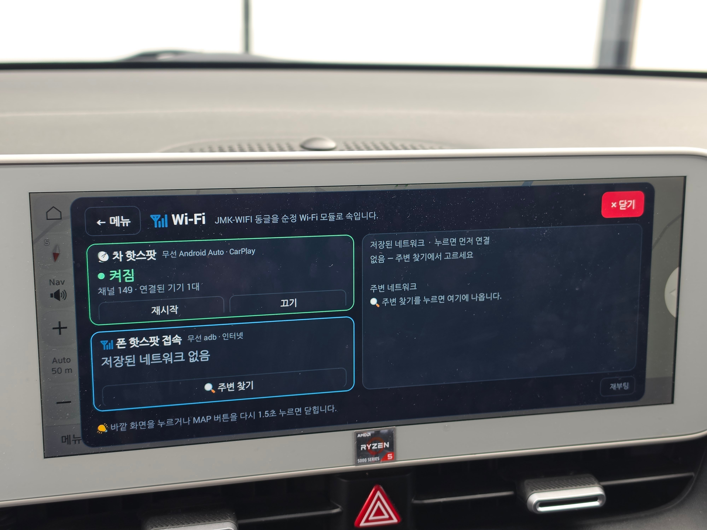
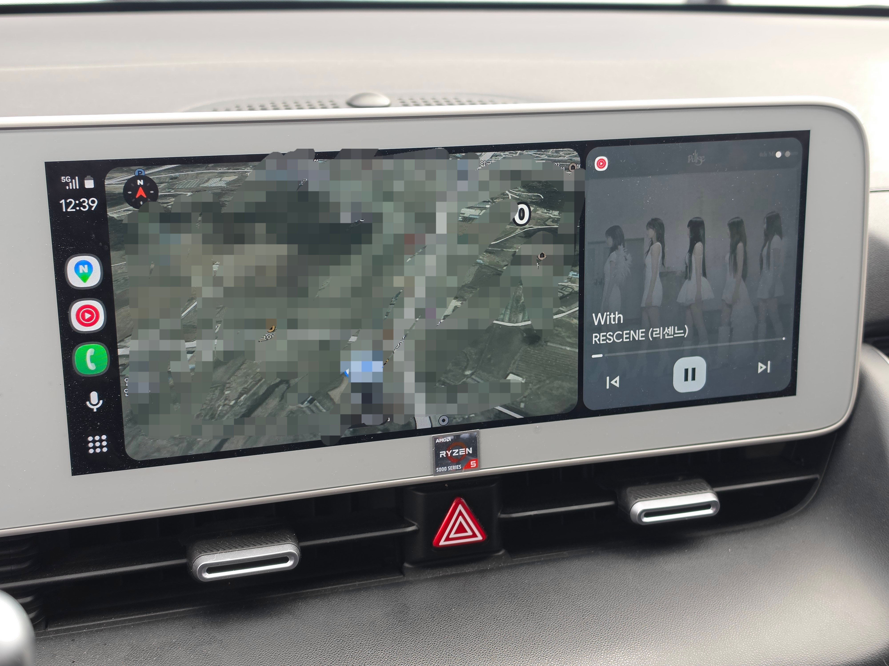
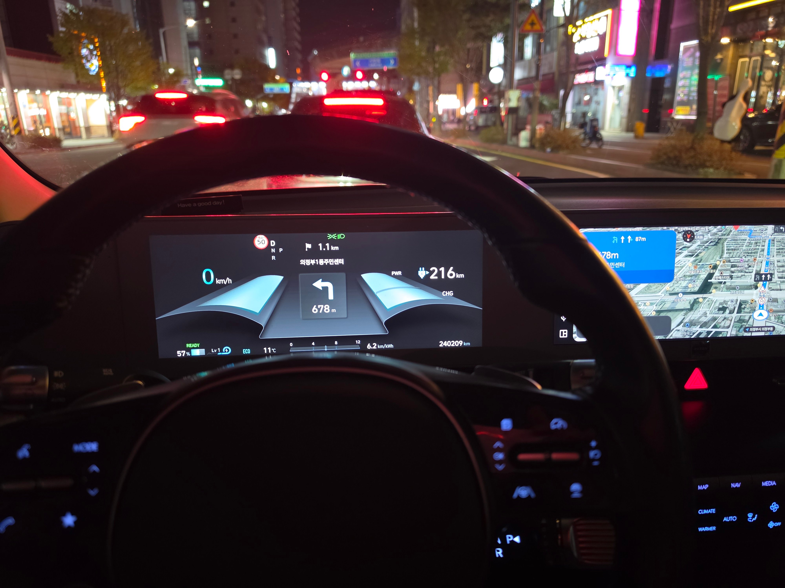

5w네비 뚫는 nemesis 툴을 사용하면
내장 무선모듈이 달려있는 일부차종(5w장착된 대부분)은 동글이 자체도 없이 연결이 가능함
내차는 내장 모듈이 삭제된 연식이라 일반 pc에 쓰던 무선랜카드를 내장 모듈로 속여서 무선기능 (안드로이드 오토/카플레이)을 쓰는중.
물론 순정네비나 블루링크 등 순정기능은 이상없이 작동함
블루링크 통신망으로 앱 다운받는 기능까지 있는데 그건 좀 위험해서 안함

폰네비로 길안내켜놔도 계기판에 TBT기능까지 열림
저거 결국 나중에 막히고 법적 문제 생길거 같음.
아무리 오픈소스고 안전 관련에 손 안댄다 해도 결국 오픈소스라는 리스크가 있음